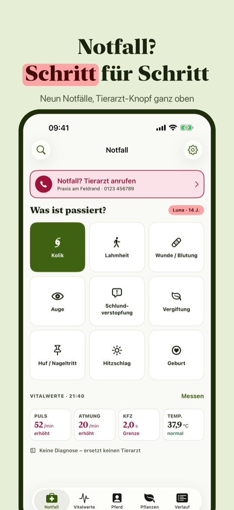
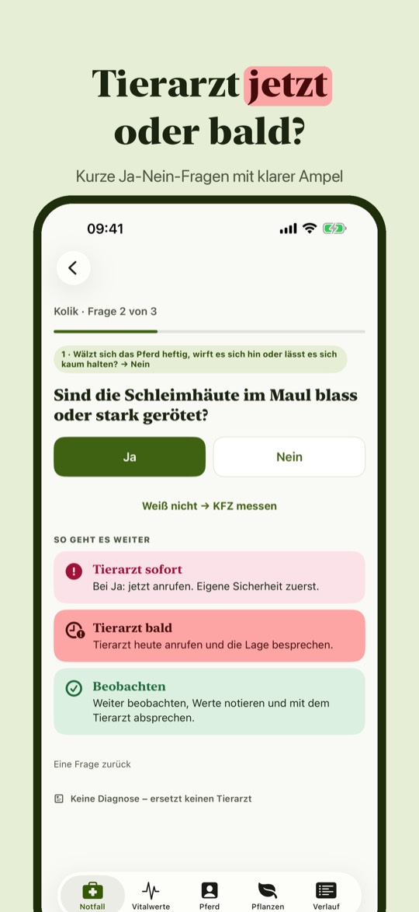
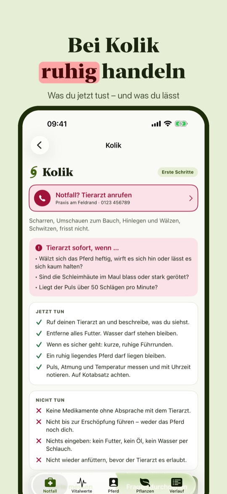
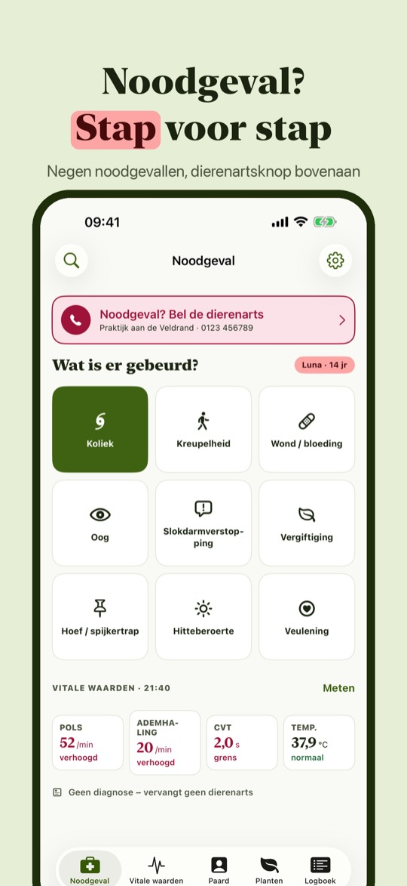
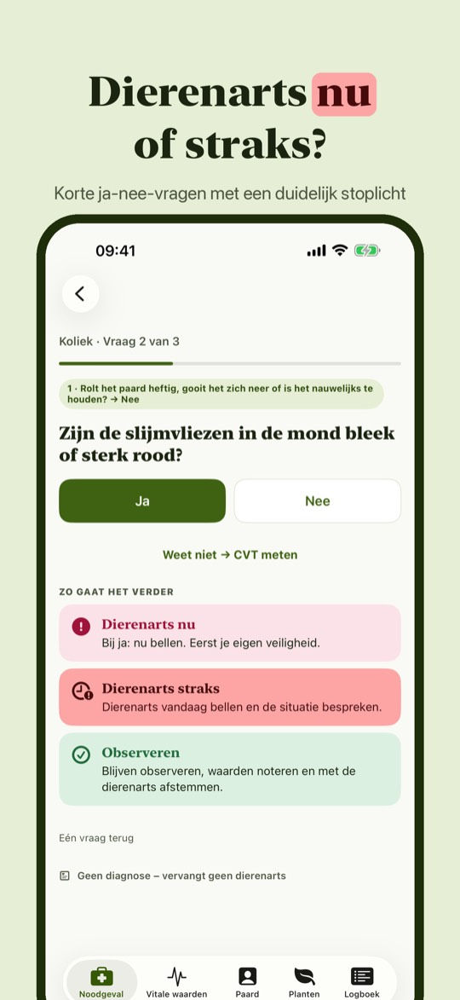
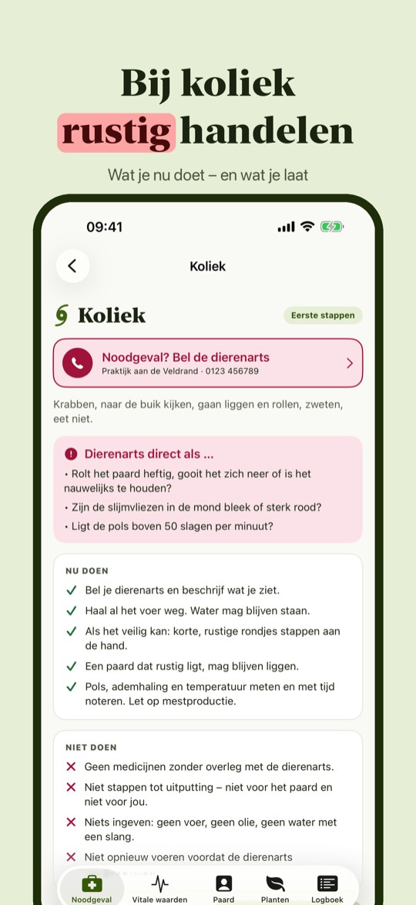

Kolik, Wunde, Puls: was tun?
Bald im App Store



Equisos ist der Erste-Hilfe-Begleiter für Pferdebesitzer. Wähle den Notfall, beantworte kurze Ja-Nein-Fragen und sieh, ob du den Tierarzt sofort oder heute anrufst. Dazu zählst du Puls und Atmung, misst die Kapillarfüllzeit und notierst die Temperatur. Alles auf Deutsch, für Deutschland und Österreich, und es funktioniert auch im Stall ohne Empfang.
Alle ersten Schritte und Fragen, die Messwerkzeuge und der Tierarzt-Knopf funktionieren ohne Kauf. Equisos Plus ist ein Einmalkauf: alle Giftpflanzen, mehrere Pferde, alle früheren Notfälle im Verlauf und die Zusammenfassung als PDF. Kein Abo, keine Werbung.
Die Texte sind eigene Zusammenfassungen von Veröffentlichungen tiermedizinischer Fakultäten und Fachstellen; die Quellen stehen in der App.
Equisos stellt keine Diagnose und ersetzt keinen Tierarzt. Die App nennt keine Medikamente und keine Dosierungen. Im Zweifel ruf immer deinen Tierarzt an. Equisos steht in keiner Verbindung zu Tierkliniken, Hochschulen, Verbänden oder Verlagen.
Erste-Hilfe-Begleiter, keine Diagnose – ersetzt keinen Tierarzt. Keine Medikamente, keine Dosierungen.
Koliek, wond, pols: wat nu?
Binnenkort in de App Store



Equisos is de EHBO-hulp voor paardeneigenaren. Kies het noodgeval, beantwoord korte ja-nee-vragen en zie of je de dierenarts direct of vandaag belt. Daarbij tel je pols en ademhaling, meet je de capillaire vullingstijd en noteer je de temperatuur. Alles in het Nederlands, en het werkt ook in de stal zonder bereik.
Alle eerste stappen en vragen, de meethulpmiddelen en de dierenartsknop werken zonder aankoop. Equisos Plus is een eenmalige aankoop: alle giftige planten, meer paarden, alle eerdere noodgevallen in het logboek en de samenvatting als pdf. Geen abonnement, geen reclame.
De teksten zijn eigen samenvattingen van publicaties van diergeneeskundige faculteiten en vakinstanties; de bronnen staan in de app.
Equisos stelt geen diagnose en vervangt geen dierenarts. De app noemt geen medicijnen en geen doseringen. Bel bij twijfel altijd je dierenarts. Equisos heeft geen band met dierenklinieken, universiteiten, verenigingen of uitgevers.
EHBO-hulp, geen diagnose – vervangt geen dierenarts. Geen medicijnen, geen doseringen.